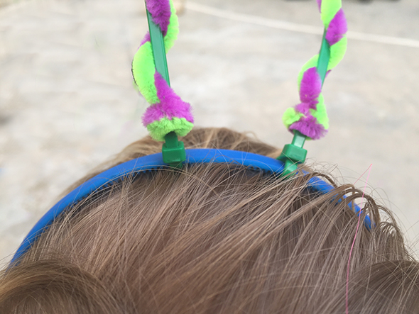
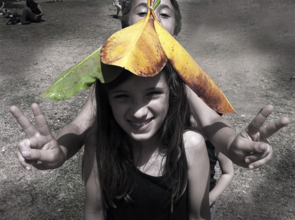
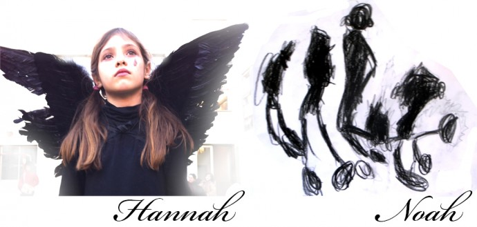
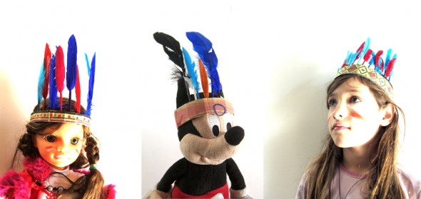

Pinterest
Instagram
ES
EN
DE
☰ Menü
Home
Das Haus
Zubehör
Dekoration
Faltanleitung
Illustration
Trinkflaschen
Bastelheft
App
Blog
Feste
Weihnachten
Ostern
Halloween
Fasching & Kostüme
Valentinstag
Geburtstag
Mutter-/Vatertag
Schulanfang
Jahreszeiten
Frühling
Sommer
Herbst
Winter
Was machen
Spielzeug
Spiele
Druckvorlagen
Essen & Rezepte
Dekoration
Malen
Experimente
Draußen
Lernen
Tiere
Geschenke & Schmuck
Bauen & Tricks
Weitere Ideen
Material
Papier
Karton
Papierrollen
Recycling
Steine
Blätter & Natur
Stoff & Nähen
Start
›
Blog
›
Verkleidung
Verkleidung
Kategorie
Aktivität
Fliegenpilz aus Pappmaché
Verkleidung
Fühler aus einem Haarreif

Verkleidung
Meine liebsten Kostüme
Verkleidung
Kostümflügel
Verkleidung
Gipsmasken in Arbeit
Verkleidung
Halloweenkostüm vom letzten Jahr
Verkleidung
Josefas Indianer-Kopfschmuck
Material
Hut aus einer Cornflakes-Schachtel
Verkleidung
007
Material
Ritterschilde
Spielzeug
Sockendutt
Material
Mäuseohren
Verkleidung
Spinnennetz-Hemd für Halloween
Verkleidung
Spinnennetz-Haarreif für Halloween
Aktivität
Zauberstäbe
Spielzeug
Kronen
Material
Krone aus einer Flasche
Verkleidung
Blätterhut

Material
Brillen aus Eierkarton
Spielen
Monsterfüße
Malen
In Schwarz

Spielen
Indianer-Kopfschmuck in 5 Minuten

Verkleidung
Brillen mit Zeitschriftenaugen
Spielzeug
Prinzessinnenrock
Seite 1 / 2
Ältere →